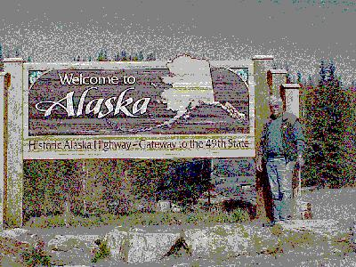
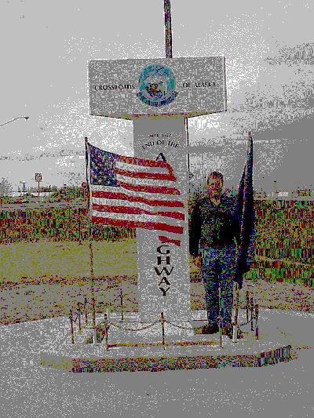
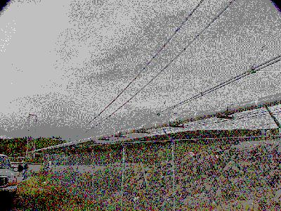

May 27, 4319 miles
| We started from the campground this morning at 7:30, anxious to get back into the United States (Alaska). | |
WELCOME TO ALASKA We made it to Alaska at 11:30 AM, but once we crossed the line it was 10:30 AM (time zones do make some of the time keeping a little awkward - as some of those back home we have tried to call at the wrong times in Ohio can attest). That is Don with the sign. |
 |
| Shortly into Alaska we had a few opportunities to see
more moose. Sorry to say, the BIG one got away, without his picture being taken,
but we did get some shots of Mom Moose and Baby Moose.
There were actually two Baby Mooses, but this is the best
picture we have right now - hopefully Don did a little
better in film. We did see another porcupine today, but all we have to show for him is a porcupine rearend. |
|
The End of the Alaskan Highway in Delta Junction Alaska! We reached the end of the Alaskan Highway at 3:30 PM today. For that, we can stop early and wash clothes again tonight. |
 |
| You know, no one can travel all
this far and not see the Alaskan Pipeline; so here it is.
This is the suspension bridge across the Tanana River,
just outside Delta Junction. We will be traveling along
its path from Delta Junction south, towards Valdez, for
some 100+ miles tomorrow, so you can look forward to
seeing more of it. Actually much of the pipeline is buried, I guess the parts above ground just make better pictures. |
 |
| We pulled into the camp grounds at Delta
Junction at 6:30 after traveling 251 miles. All in all a
pretty light travel day, but a lot of construction delays. For the first time this trip, we suffered some delays due to road constuction. We hit three construction zones today, each resulting in 15-30 minutes of lost time. Wildlife for the day included: moose (4); porcupine (1); snowshoe rabbits (lots of them). |
|